梅吉お留守番と札幌帰省 [梅吉]
･゜ﾟ･*:.｡..｡.:*･゜ﾟ･*:.｡. .｡.:*･゜ﾟ･*･゜ﾟ･*:.｡..｡.:*･゜ﾟ･*:.｡..｡.:*･゜ﾟ･*

引き続きのお願いです。猫を探しています。
不明になったのは今年１月頃と見られていますが不確定です。
それ以前の可能性もあります。★拡散希望★兄弟猫脱走【千葉県我孫子市】
なにか情報＆捜索のヒントがありましたらコメント欄でも構いません。
お知らせくださいませm(_ _)m
･゜ﾟ･*:.｡..｡.:*･゜ﾟ･*:.｡. .｡.:*･゜ﾟ･*･゜ﾟ･*:.｡..｡.:*･゜ﾟ･*:.｡..｡.:*･゜ﾟ･*

このスリッパを履いた足にガブリついている梅吉さんは・・・
そうです！
お盆休みに入って早々、一泊で札幌に帰省して来ました。
この写真は例のごとく帰省中にシッターさんから送られて来たものです(⌒_⌒;
（我が家のお留守番事情の記事はこちら）
我が家がお願いしているシッターさん、10月に赤ちゃんが生まれるので産休に入ります。
（シッターさんは若いけど個人事業主。シッター稼業、辞めないよね？って聞いたら
辞めません！って言ってくれました。よかった〜。）
で、今回新しいスタッフの方と一緒に打ち合わせに来ていただいたのが８月初め。
その時梅吉はとってもおとなしくて、シッターさんに静かに撫でられたりしていました。

その時の写真は撮り忘れちゃったんですが
ホント、こんな顔しておとなしく撫でられていたものだから
「梅吉くん、おとなしいね！」「いい子だね！！」「仏（爆）、みたいだね！！！」
なんて盛大に褒めてもらっていたのに・・・

こんな風にすりすりしたと思ったらガブッとしていたようです。
以下シッターさんからのメールの抜粋です。
出かけた日の夜のメール
『玄関を開けると梅吉くんが足元でお出迎えしてくれました。
ニオイチェックしたあと、スリスリーとしてくれ、あれ？大丈夫かも?と、思った瞬間
パンチからの噛みとダブル攻撃でした。笑
開始早々にツンとデレのダブルアタックでした。
スリッパを履き、中に進む廊下では永遠に足元への攻撃が止むことはなかったです。笑』
翌日の朝のメール
『今日もしっかり玄関で待ち構えていた梅吉くん。
まずはいつものスリスリ?からの鼻息フンフンッ！
これは早くスリッパを履かないと![[あせあせ（飛び散る汗）]](https://blog.ss-blog.jp/_images_e/162.gif) と思ってる間に第一弾攻撃開始です笑
と思ってる間に第一弾攻撃開始です笑
やっぱり打ち合わせでは猫被ってましたね^^;』
梅吉、やる時はやる漢、のようですwww
仏の梅吉になるのはまだ早い。おかーさんは安心しましたよ！
がぶがぶ＆パンチを繰り出している時以外はシッターさんのお世話で元気にご飯を食べ
おやつをもらって
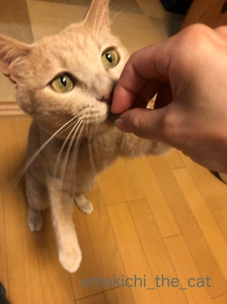
無事に過ごしていてくれました＾＾

夕方帰宅すると玄関開けたら１秒で猫。（梅吉が写っていませんが）

「ただいまー！」喜びの抱擁Ｏ(≧▽≦)Ｏ
留守番お疲れ様でした＾＾
 ↑ガブッと一押し↑
↑ガブッと一押し↑

引き続きのお願いです。猫を探しています。
不明になったのは今年１月頃と見られていますが不確定です。
それ以前の可能性もあります。★拡散希望★兄弟猫脱走【千葉県我孫子市】
なにか情報＆捜索のヒントがありましたらコメント欄でも構いません。
お知らせくださいませm(_ _)m
･゜ﾟ･*:.｡..｡.:*･゜ﾟ･*:.｡. .｡.:*･゜ﾟ･*･゜ﾟ･*:.｡..｡.:*･゜ﾟ･*:.｡..｡.:*･゜ﾟ･*

このスリッパを履いた足にガブリついている梅吉さんは・・・
そうです！
お盆休みに入って早々、一泊で札幌に帰省して来ました。
この写真は例のごとく帰省中にシッターさんから送られて来たものです(⌒_⌒;
（我が家のお留守番事情の記事はこちら）
我が家がお願いしているシッターさん、10月に赤ちゃんが生まれるので産休に入ります。
（シッターさんは若いけど個人事業主。シッター稼業、辞めないよね？って聞いたら
辞めません！って言ってくれました。よかった〜。）
で、今回新しいスタッフの方と一緒に打ち合わせに来ていただいたのが８月初め。
その時梅吉はとってもおとなしくて、シッターさんに静かに撫でられたりしていました。

その時の写真は撮り忘れちゃったんですが
ホント、こんな顔しておとなしく撫でられていたものだから
「梅吉くん、おとなしいね！」「いい子だね！！」「仏（爆）、みたいだね！！！」
なんて盛大に褒めてもらっていたのに・・・
こんな風にすりすりしたと思ったらガブッとしていたようです。
以下シッターさんからのメールの抜粋です。
出かけた日の夜のメール
『玄関を開けると梅吉くんが足元でお出迎えしてくれました。
ニオイチェックしたあと、スリスリーとしてくれ、あれ？大丈夫かも?と、思った瞬間
パンチからの噛みとダブル攻撃でした。笑
開始早々にツンとデレのダブルアタックでした。
スリッパを履き、中に進む廊下では永遠に足元への攻撃が止むことはなかったです。笑』
翌日の朝のメール
『今日もしっかり玄関で待ち構えていた梅吉くん。
まずはいつものスリスリ?からの鼻息フンフンッ！
これは早くスリッパを履かないと
やっぱり打ち合わせでは猫被ってましたね^^;』
梅吉、やる時はやる漢、のようですwww
仏の梅吉になるのはまだ早い。おかーさんは安心しましたよ！
がぶがぶ＆パンチを繰り出している時以外はシッターさんのお世話で元気にご飯を食べ
おやつをもらって
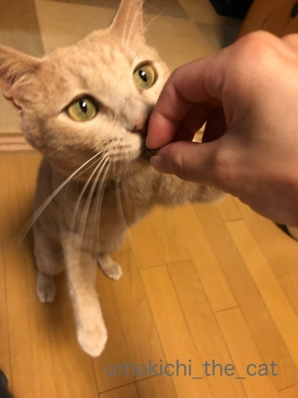
無事に過ごしていてくれました＾＾

夕方帰宅すると玄関開けたら１秒で猫。（梅吉が写っていませんが）

「ただいまー！」喜びの抱擁Ｏ(≧▽≦)Ｏ
留守番お疲れ様でした＾＾
梅吉と一緒に楽しむ花火 [梅吉]
･゜ﾟ･*:.｡..｡.:*･゜ﾟ･*:.｡. .｡.:*･゜ﾟ･*･゜ﾟ･*:.｡..｡.:*･゜ﾟ･*:.｡..｡.:*･゜ﾟ･*
引き続きのお願いです。
猫を探しています。★拡散希望★兄弟猫脱走【千葉県我孫子市】
よろしくお願い致しますm(_ _)m
･゜ﾟ･*:.｡..｡.:*･゜ﾟ･*:.｡. .｡.:*･゜ﾟ･*･゜ﾟ･*:.｡..｡.:*･゜ﾟ･*:.｡..｡.:*･゜ﾟ･*
![[猫]](https://blog.ss-blog.jp/_images_e/101.gif) ん？
ん？

いま どーん いうたな・・・
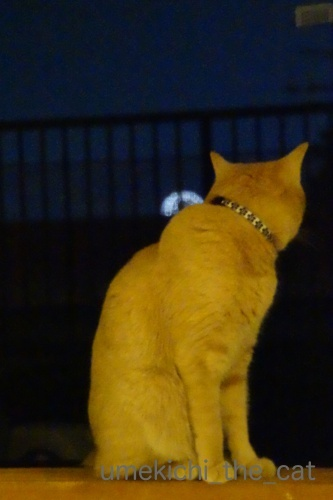
なぬ！？

あれはー！！![[ぴかぴか（新しい）]](https://blog.ss-blog.jp/_images_e/150.gif)
先日市内で行われた花火大会。
去年まで我が家からは爪先立ちしなきゃ見られなかったんですが
遮っていた建物が取り壊された？
（そんな工事してたかなぁ・・・・・）

低く上がる花火はベランダの手すり越しにしか見えないのですが
高く打ち上がるとこんな感じでちゃんと見えます(≧▽≦)

網戸越しに撮影したので妙なギザギザ感、電飾っぽく見えますが
れっきとした花火ですよ。

街中で見る花火なのでビルの屋根や電線がかぶりますが

それもまた一興ということで＾＾
来年からは時間になったら椅子を用意してお酒片手に鑑賞しようっと。
（この日は外食帰りだったので私は途中で寝落ちでした(^_^;)）
梅吉はみんなが窓辺に集まっているので「なにかおるんか？」という感じで
おしっぽブンブンしながら参加してました。
花火の音も、近くでどんどん鳴るわけじゃないので
全然怖がりませんでしたよ(^_－)☆
さて、梅しごとー梅吉日記ー、来週はお盆休みとなります。
皆様のところへは遊びに伺いますが頻度は落ちるかも。
通常更新は20日からになりますのでよろしくお願い致しますm(_ _)m
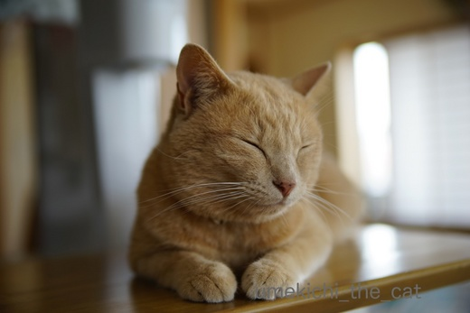
ちょっと おやすみやで
台風、残暑とまだまだ厳しい季節が続きますが
皆様ご自愛くださいませ(^_－)☆
↑ガブッと一押し↑
引き続きのお願いです。
猫を探しています。★拡散希望★兄弟猫脱走【千葉県我孫子市】
よろしくお願い致しますm(_ _)m
･゜ﾟ･*:.｡..｡.:*･゜ﾟ･*:.｡. .｡.:*･゜ﾟ･*･゜ﾟ･*:.｡..｡.:*･゜ﾟ･*:.｡..｡.:*･゜ﾟ･*

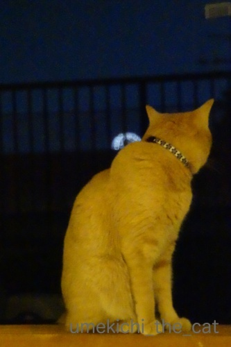

先日市内で行われた花火大会。
去年まで我が家からは爪先立ちしなきゃ見られなかったんですが
遮っていた建物が取り壊された？
（そんな工事してたかなぁ・・・・・）

低く上がる花火はベランダの手すり越しにしか見えないのですが
高く打ち上がるとこんな感じでちゃんと見えます(≧▽≦)

網戸越しに撮影したので妙なギザギザ感、電飾っぽく見えますが
れっきとした花火ですよ。

街中で見る花火なのでビルの屋根や電線がかぶりますが

それもまた一興ということで＾＾
来年からは時間になったら椅子を用意してお酒片手に鑑賞しようっと。
（この日は外食帰りだったので私は途中で寝落ちでした(^_^;)）
梅吉はみんなが窓辺に集まっているので「なにかおるんか？」という感じで
おしっぽブンブンしながら参加してました。
花火の音も、近くでどんどん鳴るわけじゃないので
全然怖がりませんでしたよ(^_－)☆
さて、梅しごとー梅吉日記ー、来週はお盆休みとなります。
皆様のところへは遊びに伺いますが頻度は落ちるかも。
通常更新は20日からになりますのでよろしくお願い致しますm(_ _)m
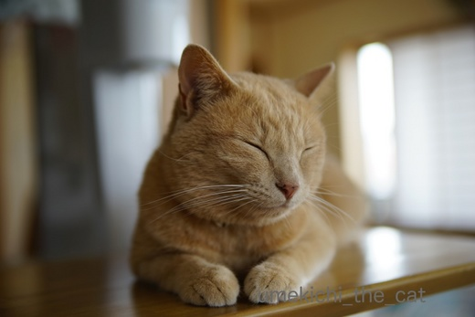
台風、残暑とまだまだ厳しい季節が続きますが
皆様ご自愛くださいませ(^_－)☆
ものぐさ抵抗とOS再インストール [梅吉]
最近、朝身支度をする時間になると洗面ボールを占拠する梅吉さん。
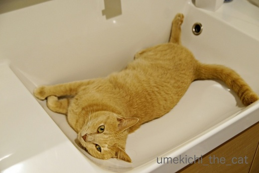
しばらく忘れていたのに「せんめんぼーるは ええかんじやった」と
思い出したようです。
でも、私がお湯を使った後なので洗面ボールは温まってます。
冷えてひんやりしてから入れば良いのにw
ちょっと避けてくださいよ。

いややー（ぺちっ）
と軽いねこぱんちいただきましたー。
おっ！両手で抵抗？やる気出て来た？？
おかーさんと戦いますかー (๑•̀ㅂ•́)و✧
と思ったら足を使って力なく抵抗。（白ぱんつ大公開）
お互いに押したり引いたりするだけ。でもぶるぶる言い始めたので楽しいみたいです(⌒_⌒;
暑いからこんなものぐさな遊びも良いですよねー。

きっとカメラが捉えたこの夏いちばんの白目と思われますＯ(≧▽≦)Ｏ
もっとすごい白目もしてたのですがカメラが間に合わずwww
↑ガブッと一押し↑
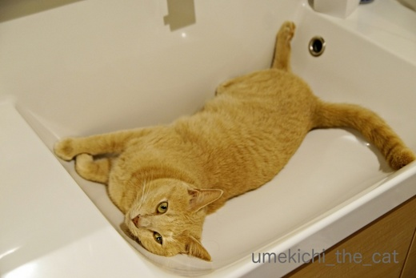
しばらく忘れていたのに「せんめんぼーるは ええかんじやった」と
思い出したようです。
でも、私がお湯を使った後なので洗面ボールは温まってます。
冷えてひんやりしてから入れば良いのにw
ちょっと避けてくださいよ。

と軽いねこぱんちいただきましたー。
おっ！両手で抵抗？やる気出て来た？？
おかーさんと戦いますかー (๑•̀ㅂ•́)و✧
と思ったら足を使って力なく抵抗。（白ぱんつ大公開）
お互いに押したり引いたりするだけ。でもぶるぶる言い始めたので楽しいみたいです(⌒_⌒;
暑いからこんなものぐさな遊びも良いですよねー。

きっとカメラが捉えたこの夏いちばんの白目と思われますＯ(≧▽≦)Ｏ
もっとすごい白目もしてたのですがカメラが間に合わずwww
トンネルは暫しの夏休み [梅吉]
あんなに気に入っていたキャットトンネルですが
連日35℃を超えるようなった頃から突然興味を失っちゃった梅吉さんw
薄い生地とはいえ空気がこもった感じがして不快なんでしょうか・・・
なのでキャトトンネルには夏休みを取ってもらうことに。
代わりにサークルが登場しましたよー。
年に一度の虫干しの意味もあるのでちょうど良い！

もちろんすぐにチェックに来る梅吉さん＾＾

出入り口では手もちょっと使います。
のれんをくぐってるみたいですよね( ´艸｀)

天井部分にレジ袋の丸めたのを投げると大喜び。
去年もこうやって遊んだよね梅吉さん。思い出した？
2018年 ぽんぽん大会
（26秒です）
盛り上がって来ると上に乗っちゃいますよー。

ああ、崩壊５秒前・・・
サークルごとひっくり返って興奮して家の中をずだだだだだだだだだー(^_^;)
崩壊したサークルでテンションが高まるようで、ますますエキサイトする
夏の日の梅吉さんでしたw
記念日ディナーは２日遅れで☆ [梅吉]
先日26日のうちの子記念日。
梅吉に喜んでもらおうと煮干しを買ってきました。
ペットショップに行って国産、無添加、無着色という
グラム換算すると結構なお値段の煮干しをゲット！
梅吉には「夜に良いことあるよ」って耳打ちしておきました＾＾
うれしい煮干し祭りの予感〜♪


初めて食べる煮干し、食いつきは良い様です(≧▽≦)

お口に入れてぶるるるるるんっ！

あ、口から出しましたΣ(ﾟ◇ﾟ；)
そのお顔は何を意味してますか・・・
「コレジャナイ」の顔に見えるのはなぜかしら。

そんなのは気のせい、気のせいに違いない。
さっきあげたのは頭部分だったから今ひとつだったのよね？
気を取り直して今度は胴体部分いきましょう！

せやから 「これじゃない」 いうてるやん
えええええーーーーー！！！！！
梅吉、煮干しを食べません（涙）
口には入れるのですが出す、入れる出すの繰り返し。
どうにも止まらない煮干し祭りを想像していたのに・・・・・
(꒦ິ⌑꒦ີ)
２日後☆
おとーさんとおかーさんは「高島屋」まで行って高級お刺身を買ってきましたよ。
お口が大きく開いてます！

これやっ！まぐろ、うまい！！

こんどは かつおやな！

これやー！！

やっと しゅやくのわしに ええことあったー！！！
ちなみに梅吉はまぐろよりかつお派ですw

やっとええことあったで おかーさんうそつきや おもうとこやった
梅吉が食べない煮干しはプライパンで乾煎りしてちょっとお醤油を垂らして
お酒のアテにしようと思ってますwww
猫様のお下がりをいただく、ああ、下僕・・・・・
↑ガブッと一押し↑
梅吉に喜んでもらおうと煮干しを買ってきました。
ペットショップに行って国産、無添加、無着色という
グラム換算すると結構なお値段の煮干しをゲット！
梅吉には「夜に良いことあるよ」って耳打ちしておきました＾＾
うれしい煮干し祭りの予感〜♪


初めて食べる煮干し、食いつきは良い様です(≧▽≦)

お口に入れてぶるるるるるんっ！

あ、口から出しましたΣ(ﾟ◇ﾟ；)
そのお顔は何を意味してますか・・・
「コレジャナイ」の顔に見えるのはなぜかしら。

そんなのは気のせい、気のせいに違いない。
さっきあげたのは頭部分だったから今ひとつだったのよね？
気を取り直して今度は胴体部分いきましょう！

えええええーーーーー！！！！！
梅吉、煮干しを食べません（涙）
口には入れるのですが出す、入れる出すの繰り返し。
どうにも止まらない煮干し祭りを想像していたのに・・・・・
(꒦ິ⌑꒦ີ)
２日後☆
おとーさんとおかーさんは「高島屋」まで行って高級お刺身を買ってきましたよ。
お口が大きく開いてます！


ちなみに梅吉はまぐろよりかつお派ですw

梅吉が食べない煮干しはプライパンで乾煎りしてちょっとお醤油を垂らして
お酒のアテにしようと思ってますwww
猫様のお下がりをいただく、ああ、下僕・・・・・
３回目のうちの子記念日＆ブログ２周年 [梅吉]
今日、7月26日は梅吉の３回目のうちの子記念日です

ブログ初公開画像！！
梅吉の里親募集の記事写真です。
一時預かりのお宅で撮られた梅吉の小太郎くん時代の写真＾＾
あどけないというか、なんだか困ったような顔。
募集記事のコメントにも
「いつも困ったような顔してます。困ってませんけど。」と書いてありましたよ ( ´艸｀)
保護してくれたNPO法人のスタッフの方に連れられて我が家にやってきた梅吉は
特に緊張するわけでも不安そうにするわけでもなく
用意したささみご飯をぱくぱく食べてトイレを上手に使っておしっこ。
数時間後にはおっとのお膝で寝始めましたよ・・・・
なんて物怖じしない子 (・o・)
物怖じしない子は日々パワーを増して我が家に来て３日目ですでにこの状態。
（12秒です）
（10秒です）
・・・・・・・(^▽^;)
子猫は久しぶりだったし、先代猫は子猫の時からとってもおとなしかったので
梅吉のすざまじい子猫パワーは驚愕でした。
（45秒あります。お時間のあるときにでも）
こんなのまだおとなしい方でしたw

４日目にはうっすら白目に〜Ｏ(≧▽≦)Ｏ
子猫時代の梅吉は高速で家の中を走り回りカーテンをよじ登り
なんにでもガブガブして何事にも興味津々で顔を突っ込み
キッチンで料理するのも大変な苦労をしました。
甘噛みもひどくて正直「キーーーーーーーッ！！！！」となった事もありましたけど
今となっては良い思い出かな＾＾
それに可愛くて面白くて良い子に育ってくれたし！！

口開けちゃって平和な寝顔だねー！
どうかこれからもそのまま、ありのままで元気に過ごしておくれm(_ _)m
↑ガブッと一押し↑

ブログ初公開画像！！
梅吉の里親募集の記事写真です。
一時預かりのお宅で撮られた梅吉の小太郎くん時代の写真＾＾
あどけないというか、なんだか困ったような顔。
募集記事のコメントにも
「いつも困ったような顔してます。困ってませんけど。」と書いてありましたよ ( ´艸｀)
保護してくれたNPO法人のスタッフの方に連れられて我が家にやってきた梅吉は
特に緊張するわけでも不安そうにするわけでもなく
用意したささみご飯をぱくぱく食べてトイレを上手に使っておしっこ。
数時間後にはおっとのお膝で寝始めましたよ・・・・
なんて物怖じしない子 (・o・)
物怖じしない子は日々パワーを増して我が家に来て３日目ですでにこの状態。
（12秒です）
（10秒です）
・・・・・・・(^▽^;)
子猫は久しぶりだったし、先代猫は子猫の時からとってもおとなしかったので
梅吉のすざまじい子猫パワーは驚愕でした。
（45秒あります。お時間のあるときにでも）
こんなのまだおとなしい方でしたw

４日目にはうっすら白目に〜Ｏ(≧▽≦)Ｏ
子猫時代の梅吉は高速で家の中を走り回りカーテンをよじ登り
なんにでもガブガブして何事にも興味津々で顔を突っ込み
キッチンで料理するのも大変な苦労をしました。
甘噛みもひどくて正直「キーーーーーーーッ！！！！」となった事もありましたけど
今となっては良い思い出かな＾＾
それに可愛くて面白くて良い子に育ってくれたし！！

口開けちゃって平和な寝顔だねー！
どうかこれからもそのまま、ありのままで元気に過ごしておくれm(_ _)m
梅吉のエコー検査 [梅吉]
週末は梅吉の定期検診でした。
今回は心臓およびお腹のエコー検査が主目的。

（口ものと緑はレンズの反射かな。エクトプラズム出してるわけじゃありませんw）
この日はあまりにも暑かったので車で病院まで。
（我が家はカーシェア。すぐ近くにステーションがあり『うちの駐車場』と呼ばれていますwww）
歩いて７〜８分の距離なんですが梅吉にも負担だし
何より梅吉を肩掛けキャリーで連れて行くのは結構な重労働。
この暑さじゃニンゲンもバテちゃいますw
梅吉さん久しぶりの車の中でギャン鳴き。
車の音いやなのかな・・・・・
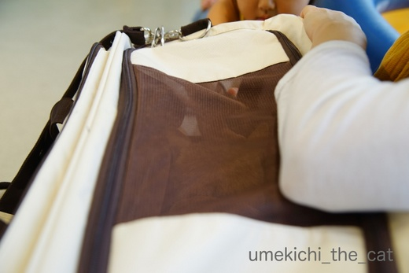
病院の待合室では小さなお友達が出来ましたよ。
写真の上の方、小さな女の子の口元が写っているのがわかるでしょうか。
この日はワンコを連れてきていたのですがおうちにニャンコもいるとのことで
梅吉にも興味津々。
キャリーの蓋を少しだけ開けると優しくなでなでしてくれました。
梅吉も黙ってなでられている・・・
小さい子を怖がるかなと思ったのですけど、驚きです。
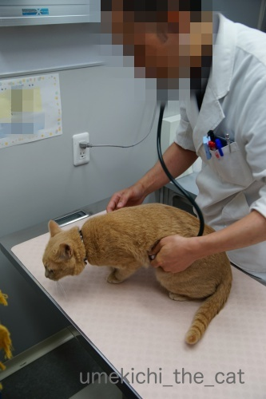
小さなお友達はOKでも先生に触られるのはイヤ(⌒_⌒;
でも！恒例のシャーーーーーッは言わなくなりました。ちょっとつまんない(^▽^;)
今後はマイルド路線で行くのでしょうか。

おかーさん もうかえって ええやろか・・・
ダメですよ。このあとエコー検査です。
エコー検査、毛刈りするのかな？と思っていたのですがしなくて良いんですね。
ニンゲンみたいにゼリーをつける必要もなし。
この病院ではアルコールで拭いてOKなんですって。
エコー検査は診察室の扉の向こう処置室のようなところでします。
見たいといえば見せてくれたのかもしませんが病院側もやりにくいでしょう。
第一梅吉が暴れて押さえつけられたりしたら私が居たたまれなくなるし
病院側もバツが悪いだろうし・・・
処置室に消えて行った梅吉の気配に耳をすませていたのですが
怖いくらい何にも聞こえてきません。
先生や助手さんが梅吉をなだめているような声も聞こえてこない・・・
エコーの画像を撮っているらしい「ピッ」という音が時々聞こえてくるくらい。
なんだなんだと思っているうちに梅吉が帰ってきました。
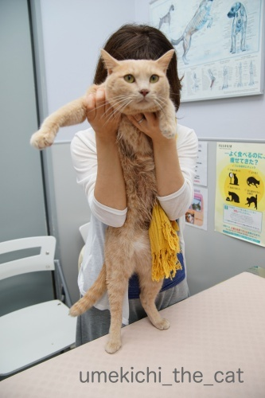
おなか びしょびしょやん![[むかっ（怒り）]](https://blog.ss-blog.jp/_images_e/152.gif)
検査の間びっくりするくらい良い子だったそうです。
先生から盛大に褒められました(〃ω〃)
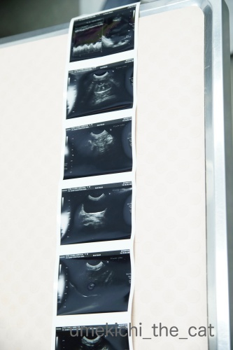
梅吉のエコー画像です。
前回の受診辺りからやけに温順しく、
今回も黙って検査されて先生は「心臓の働きが悪くて元気がないんとちゃうか・・・」と
密かに心配していたそうなんですが・・・
動きも正常、肥大も無しのとっても健康な心臓だったそうです＾＾
胃、肝臓、腎臓も全く問題なし。
ただ一箇所ちょっと気になるところがあったのですが
日頃の健康状態で判断すると大きな事ではないので様子見となりました。
（そのうち記事にするかもしれません）
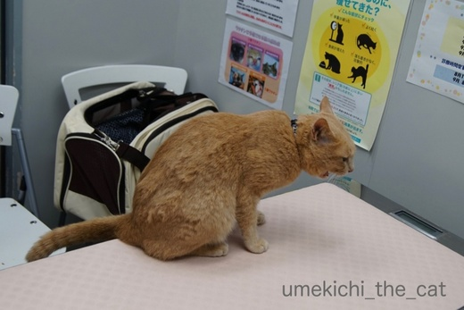
診察台の上で帰るー！！と叫ぶw
（体重は4650gでした。きなこちゃん・・・）
今飲んでいるお薬がうまく作用して心臓、肝臓、腎臓は健康であることがわかって一安心。
次回の受診は3ヶ月後の採血になります。
今よりは暑さもおさまっているかな、いやそうであってくれないと困ります。
↑ガブッと一押し↑
今回は心臓およびお腹のエコー検査が主目的。

（口ものと緑はレンズの反射かな。エクトプラズム出してるわけじゃありませんw）
この日はあまりにも暑かったので車で病院まで。
（我が家はカーシェア。すぐ近くにステーションがあり『うちの駐車場』と呼ばれていますwww）
歩いて７〜８分の距離なんですが梅吉にも負担だし
何より梅吉を肩掛けキャリーで連れて行くのは結構な重労働。
この暑さじゃニンゲンもバテちゃいますw
梅吉さん久しぶりの車の中でギャン鳴き。
車の音いやなのかな・・・・・
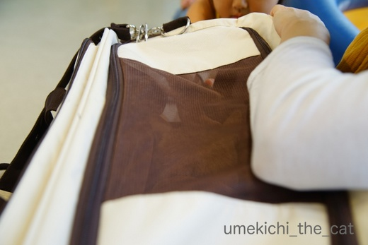
病院の待合室では小さなお友達が出来ましたよ。
写真の上の方、小さな女の子の口元が写っているのがわかるでしょうか。
この日はワンコを連れてきていたのですがおうちにニャンコもいるとのことで
梅吉にも興味津々。
キャリーの蓋を少しだけ開けると優しくなでなでしてくれました。
梅吉も黙ってなでられている・・・
小さい子を怖がるかなと思ったのですけど、驚きです。
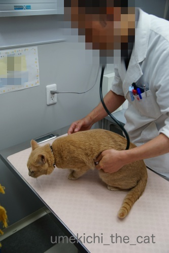
小さなお友達はOKでも先生に触られるのはイヤ(⌒_⌒;
でも！恒例のシャーーーーーッは言わなくなりました。ちょっとつまんない(^▽^;)
今後はマイルド路線で行くのでしょうか。

ダメですよ。このあとエコー検査です。
エコー検査、毛刈りするのかな？と思っていたのですがしなくて良いんですね。
ニンゲンみたいにゼリーをつける必要もなし。
この病院ではアルコールで拭いてOKなんですって。
エコー検査は診察室の扉の向こう処置室のようなところでします。
見たいといえば見せてくれたのかもしませんが病院側もやりにくいでしょう。
第一梅吉が暴れて押さえつけられたりしたら私が居たたまれなくなるし
病院側もバツが悪いだろうし・・・
処置室に消えて行った梅吉の気配に耳をすませていたのですが
怖いくらい何にも聞こえてきません。
先生や助手さんが梅吉をなだめているような声も聞こえてこない・・・
エコーの画像を撮っているらしい「ピッ」という音が時々聞こえてくるくらい。
なんだなんだと思っているうちに梅吉が帰ってきました。
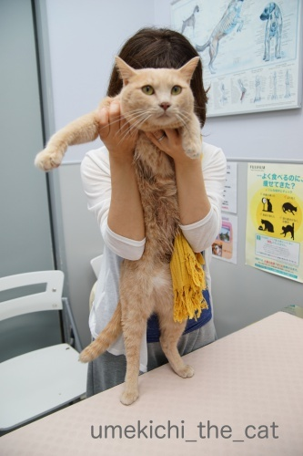
検査の間びっくりするくらい良い子だったそうです。
先生から盛大に褒められました(〃ω〃)
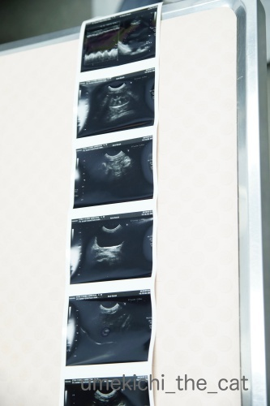
梅吉のエコー画像です。
前回の受診辺りからやけに温順しく、
今回も黙って検査されて先生は「心臓の働きが悪くて元気がないんとちゃうか・・・」と
密かに心配していたそうなんですが・・・
動きも正常、肥大も無しのとっても健康な心臓だったそうです＾＾
胃、肝臓、腎臓も全く問題なし。
ただ一箇所ちょっと気になるところがあったのですが
日頃の健康状態で判断すると大きな事ではないので様子見となりました。
（そのうち記事にするかもしれません）
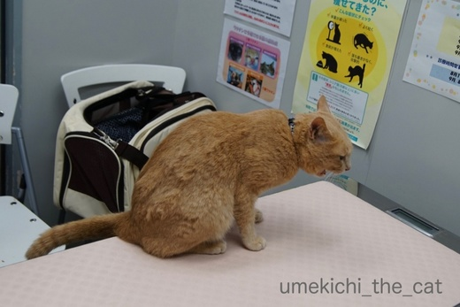
診察台の上で帰るー！！と叫ぶw
（体重は4650gでした。きなこちゃん・・・）
今飲んでいるお薬がうまく作用して心臓、肝臓、腎臓は健康であることがわかって一安心。
次回の受診は3ヶ月後の採血になります。
今よりは暑さもおさまっているかな、いやそうであってくれないと困ります。
梅吉のガブおもてなし [梅吉]
昨日はくつしたにゃんさんが我が家に遊びに来てくれました＾＾
くつしたにゃんさんとはリュカさんを通じてお友達に。
我が家にいらっしゃるのは2回目です。

バルミューダでチーズトースト祭り！
もちろん昼飲みしますよ！！

梅吉さんも興味津々です（パンとチーズ大好き。あげませんけどw）
くつしたにゃんさんとは同じ年の生まれ。しかも！同じ誕生日であることが判明(・o・)
こんな偶然ってあるのですね・・・

梅吉さんはお土産をもらってたくさん遊んでもらいましたよ。
おかーさんとはしたことなかった遊び。
シンクの下から覗き込まれて〜


左ストレート決まりましたw

壁を有効利用して遊んでくれます。やっぱり猫飼っている人は遊び方が上手だなぁーＯ(≧▽≦)Ｏ
ちゃんと猫のツボを心得ておいでです＾＾

後ろから前からどっちから攻撃されるかわからないので身構える梅吉さん。
おもてなしのガブも決まりました(*>艸<)

くつしたにゃんさん宅の分身ちゃんずにもご挨拶できましたよー＾＾
めちゃ鼻くっつけてますwww
くつしたにゃんさんはこの本を届けがてら遊びに来てくれたのです。
この本は熊本地震を経験された獣医さんの実体験が元になっています。
よーく読まなくっちゃ！！
遊びに来てくれてありがとう＾＾
今度は玉子コロッケ（一緒に食べようと思ったのにお店が休みだった(꒦ິ⌑꒦ີ) ）
食べに来てねーヾ(*ΦωΦ)ﾉ
ベランダ夏仕様 [梅吉]
梅吉さんが穴のあくほど見つめているのは
ベランダで作業するおとーさん。

あ、梅吉さんは現場監督ですか？(*>艸<)

ベランダ、おっとの心の憩（笑）盆栽コーナー。
（今時期盆栽くんたちは暑さにやられてぐったりしてます。）
このベランダは北向きなんですが周りに高い建物がないので
朝は東から午後は西からキョーレツな日差しが照りつけます。
その日差しから盆栽くんたちを少しでも遮るため
おっとと梅吉は（笑）シェードを設置していたのです。

で、こうなりました！
縁のヒラヒラがちょっと我が家テイストではないのですがまあOK^^
巻き上げ式なので風の強い日などはシェードを収納出来ます。
色はすぐ褪せて馴染んだ感じになるでしょう。

まだ見てますw
(いろんな足が写り込んでますが気にせんといてw）
一通り作業も終わったし梅吉さんにベランダから最終チェックをしていただきましょう！
傘好きなのでこのシェードの下にも入ってくれるかな？
いかがでしょうか？梅吉さん？？
・・・・・って興味はそれですか(^▽^;)
ベランダに出た途端シェードには興味を失いダンボールに全力投球w
うっとりしちゃってますよーー！！
季節のご挨拶 [梅吉]
皆様、暑中お見舞い申し上げますm(_ _)m

蒸し蒸しと暑い日が続いていますね。
日常のひと時、梅吉のプール画像で涼を取っていただけると嬉しゅうございます＾＾
ちなみに右端にいるのはあざらし梅吉です(*>艸<)
あの時「水泳選手みたい」とのコメントをいつくかいただいたので満を持しての登場ですよ。
今回はプールの監視員、ライフセーバーということでお願いします＾＾
《座布団三枚の漢》
昨日はすももちゃんが座布団にしがみつく様にくつろいでいらっしゃいましたが
最近の梅吉の主な居場所も座布団の上になっております。
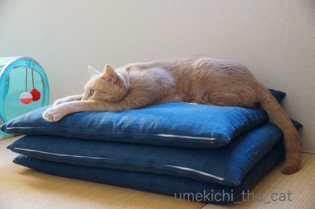
こんな感じででろ〜ん (⌒_⌒;
ところで、梅吉さん、重大なお知らせがありますよ。
我が家の座布団は梅吉さんが乗ってるのが全てです。
なので梅吉さんがどんなに面白いことしても座布団はMAX 三枚です。
なぬっ！

が〜ん![[たらーっ（汗）]](https://blog.ss-blog.jp/_images_e/163.gif) ほんまかいな・・・・・
ほんまかいな・・・・・
やまみたいな ざぶとんにのるん たのしみにしとったのに
皆様に暑中お見舞いをお届けするに当たり、そういえば暑中お見舞いはいつ出すの？
と思い調べてみました。
諸説ある様なので以下に列記。
◉夏の土用から立秋（８月６日）の前日
◉小暑（７月７日）から立秋の前日
◉梅雨明けから立秋の前日
立秋の前日までは同じなのですが送り始めの時期が違っていました。
梅雨明け（東北はまだですが）と小暑は過ぎたので良いかな、と
一筆したためて（違）みましたー＾＾
↑ガブッと一押し↑

蒸し蒸しと暑い日が続いていますね。
日常のひと時、梅吉のプール画像で涼を取っていただけると嬉しゅうございます＾＾
ちなみに右端にいるのはあざらし梅吉です(*>艸<)
あの時「水泳選手みたい」とのコメントをいつくかいただいたので満を持しての登場ですよ。
今回はプールの監視員、ライフセーバーということでお願いします＾＾
《座布団三枚の漢》
昨日はすももちゃんが座布団にしがみつく様にくつろいでいらっしゃいましたが
最近の梅吉の主な居場所も座布団の上になっております。
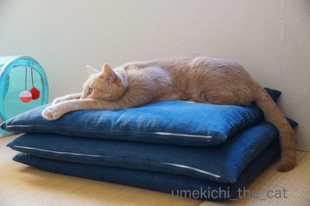
こんな感じででろ〜ん (⌒_⌒;
ところで、梅吉さん、重大なお知らせがありますよ。
我が家の座布団は梅吉さんが乗ってるのが全てです。
なので梅吉さんがどんなに面白いことしても座布団はMAX 三枚です。

皆様に暑中お見舞いをお届けするに当たり、そういえば暑中お見舞いはいつ出すの？
と思い調べてみました。
諸説ある様なので以下に列記。
◉夏の土用から立秋（８月６日）の前日
◉小暑（７月７日）から立秋の前日
◉梅雨明けから立秋の前日
立秋の前日までは同じなのですが送り始めの時期が違っていました。
梅雨明け（東北はまだですが）と小暑は過ぎたので良いかな、と
一筆したためて（違）みましたー＾＾

カフェオレ色の梅吉

梅吉 2023年8月10日 永眠


梅吉と出会った譲渡会

犬猫の理由なき殺処分ゼロ
妄想広告
UMEKICHI 光

爆発的に早い！
時々攻撃的！
Thanks to Mr.Boss365
爆発的に早い！
時々攻撃的！
Thanks to Mr.Boss365